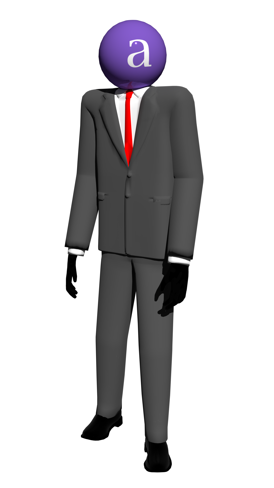

From the amateur developer that made this one game and has pretty
much gone radio-silent ever since comes a bare-bones shell of a
platformer that somehow took an entire year to make:
apokalypto
(spelled with a lowercase a because I think it looks better). In
this game, you play as Apathy Asshole "Not Awesome" apokalypto,
whose design is in no way inspired by countryhumans
(not that I have a problem with the fandom or the concept alone),
as he navigates through a bland, grossly-linear series of generic
floating platforms with solid colors.
They should make you look forward to his 3D platformer!
If you successfuly play through a pathetic total of four levels with
red platforms that kill apokalypto and an unforgiving difficulty
curve, all you'll see is the credit screen with an office in the
background. If that's not enough to satisfy you, don't even bother.
I won't promise that the sequel will have a different ending though.
Yes, surprisingly enough, there is a sequel in
development (unlike the aforementioned 3D platformer). It'll be made
with Unity instead of Unreal Engine 4 because the latter was a
nightmare to work with. Seriously, that ledge grab mechanic took me
several weeks if not months to figure out! I hope you appreciate it.